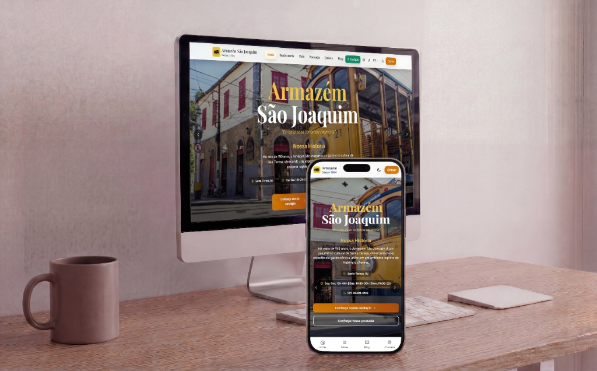

Cliente real
Armazém São Joaquim
- Problema
- Restaurante, pousada e café no mesmo negócio, sem um lugar único para mostrar cardápio, quartos e conteúdo e receber reservas.
- Entrega
- Site institucional com cardápio online, blog, área da pousada, catálogo do café e galeria; reservas com confirmação; painel administrativo para o próprio negócio atualizar o conteúdo; versões em português e inglês.
- Stack
- Link
-
Site temporariamente fora do ar